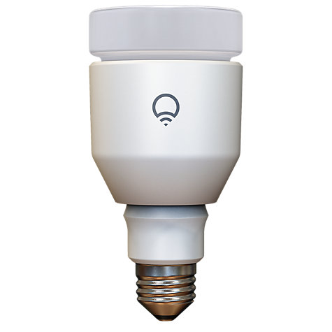

Week #205 shares its name with 205 Martha a large main belt asteroid. It is a more common C-Type carbonous asteroid. Week #205 also shares its name with a type of commuter train in Japan, the 205 Series.
It has been an eventful week 205. In many ways we’re glad to be over, as it was a week packed with projects, meetings, contracts, fixes and some travel. Now we can settle back into a more normal, hopefully less hectic schedule.
From the frying pan into the fire. At the start of 02015, we have reduced our workload with Vísar from near 100% down to only a few hours a week during the hand-over. We’ve now signed a six-month agreement to contribute about 50% time to a new customer to help analyse some of their data to help better build better recommendations and understand what makes a good category and how to improve bad categories.
We’ve also been working on a dashboard project for another local company. We’ve been creating prototypes for awhile now. This week they had some meetings with their dev team in Denmark, so we put together a bunch of changes and proposed some new designs, brand new dashboard components and have been working a lot on refactoring some UI for one of their touch screens. Hopefully, when the project is finished, we can talk more about it and add these to our portfolio.
We also had a long meeting over our newest project dealing with governmental paperwork, certain hollywood employees and local unions. There is a lot of potential in this project and in week #206, we’re moving from paper wireframes to some actual working HTML pages. At that point, we’ll decide where to take the project next.
Friday was also the opening for Borgarmynd’s Reykjavik Map Paintings at the local art gallery SPARK DESIGN SPACE. They are showcasing and selling their original watercolour paintings from the Reykjavik Center Map. The turn out was impressive and the atmosphere jovial.
Besides the client work, we’ve been spending a lot of time this week dusting off the machine called “sales pipeline”. You’d be surprised how many projects you need to have proposed, in chase or in development before you sign the contract. Since getting everyone back into the office, we’re back to ramping-up the machine so we can make payroll and have some money in the coffers to try some new and interesting stuff.
Someone once said that money isn’t goal of the journey, but it is the fuel. People are afraid of talking about money, but it is necessary for any company. Just like during a road trip, you need fuel to get through your journey, but the trip isn’t a tour of petrol stations, you need money to keep a company running. It isn’t something you should be afraid of talking about.
Bric-à-brac
Beagle 2 has been found! Back on Christmas 02003 the UK’s Beagle 2 was to land on the surface of Mars. Unfortunately, it was never heard from again. Now with photos from the HiRISE Mars satellite, it has been spotted only partially deployed. This vindicates the idea a small UK team could put a satellite on the surface of Mars. It is hard to land on Mars, as of 2010, of 38 launch attempts to reach the planet, only 19 have succeeded giving a 50% success or failure rate; depending if you’re a glass half full or empty kinda person.
The original lander was only expected to operate for 180 days, so it is unlikely much will come of this discovery except closure on what happened in the process.
LIFX & IFTTT
For awhile now, we’ve had a LIFX bulb in our office. It is a WiFi connected bulb which you can control via your smart phone or even through computer code. Up until yesterday, it has only been accessible through the local network. If you wanted to control it, you had to also be near it. With the most recent BETA release, you can now connect the bulb back to the mothership over the internet. Once of the first partner programs is IFTTT a service that allows you to create recipes from common services. Each time we get an @mention on twitter we can make the light blink, with every sale on GumRoad, we can make the light breath a green hue, and many more.
This is a big first step in a truly Internet of Things device. Previously it was a smart bulb, now we can actually get it talking with other devices around the planet.